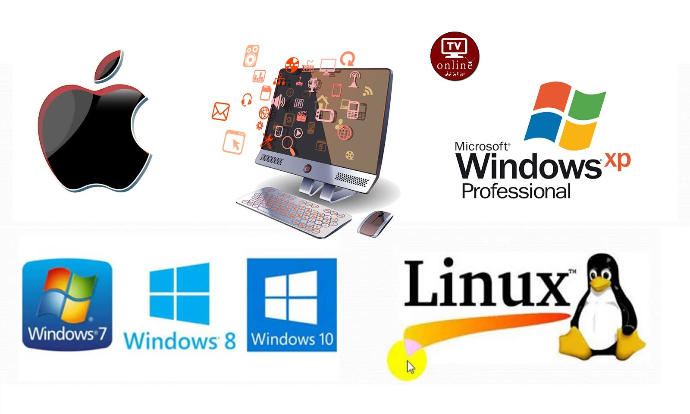

Operating System
Definition
An Operating System (OS) is an interface between a computer user and computer hardware. An operating system is a software which performs all the basic tasks like file management, memory management, process management, handling input and output, and controlling peripheral devices such as disk drives and printers.
Some popular Operating Systems include Linux Operating System, Windows Operating System, VMS, OS/400, AIX, z/OS, etc.
Exampels of operating systems
- Microsoft Windows
- linux
- Unix
- Mac os
- Android
Types of operating systems
- Single-tasking and multi-tasking
- Single- and multi-user
- Templated
- Distributed
- Embedded
- Real-time
| OS |
kinds |
other |
| windows |
7 |
10 |
| linux |
fedora |
ubunto |

More Information
History
Mainframes
Microcomputers
About me